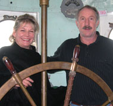
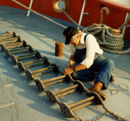

Membership
Museum Membership
Home › Membership
Museum Membership
A USLM membership will help us fund Nantucket / LV-112's historic restoration and preservation.
When you become a member of the United States Lightship Museum (USLM), you will be helping to rescue and preserve Nantucket Lightship / LV-112, a National Historic Landmark and precious national treasure that is an important part of our nation’s maritime heritage and culture. Plus you will have the satisfaction of knowing you are a contributing partner in the legacy of the world’s most famous and largest U.S. lightship ever built!
The United States Lightship Museum (USLM) is a 501(c)3 non-profit organization entirely composed of volunteers who include former U.S. Coast Guard lightship veterans, maritime historians and enthusiasts. Anyone who has an interest and passion for maritime history is welcome to participate. Join today!
Rescuing a National Historic Landmark and National Treasure

In 2008, after nearly seven years of neglect, while berthed at Oyster Bay, Long Island NY, LV-112 was in danger of being scrapped. A group of preservation-minded individuals formed a nonprofit organization — the United States Lightship Museum (USLM) — to rescue and restore Nantucket / LV-112. The USLM purchased LV-112 for one dollar in October 2009 and transported the historic ship back to its home port of Boston in May 2010.Nantucket / LV-112 was considered state-of-the-art when built, exclusively designed to be unsinkable and to withstand the treacherous conditions of Nantucket Shoals Lightship Station, where it served for 39 years. As a 501(c)3 nonprofit group, the United States Lightship Museum (USLM) was exclusively established to rescue LV-112 from being destroyed. The USLM’s mission is to restore and reopen it as a museum and floating learning center. In 2010, the USLM brought the historic ship back to its original home port of Boston from Oyster Bay, Long Island, NY, after it was neglected and virtually abandoned for several years. So far, the USLM has restored approximately 50% of the ship and in 2010 reopened it as a museum and floating learning center. LV-112 is berthed at the Boston Harbor Shipyard & Marina on the East Boston waterfront.

LV-112 is bound by a covenant and can only be utilized as a museum and floating learning center open to the general public. The ship is currently undergoing a multi-phase restoration and is open to the general public on Saturdays, 10–4 (April – Oct.). Tours for individuals/groups and private events can be arranged by appointment on all other days. For more information call 617.797.0135 or email rmmjr2@comcast.net.Experience what shipboard life was like on LV-112! To join, please download the printable Membership form. When downloaded to your computer, the form can be filled out electronically, printed and mailed in with your payment to: USLM / Nantucket LV-112. You can also pay electronically via PayPal (please include mailing address) by clicking the “Donate” button on the homepage or How to Help page. Thank you!
Basic Museum Membership
Includes a Museum Membership Card, free unlimited admission, subscription to the Museum Quarterly newsletter, and invitations and discounts to museum programs and members-only events. The USLM is a member of the Council of American Maritime Museums (CAMM) and the Historic Naval Ships Association (HNSA). USLM members will be granted reciprocal privileges (free admission) at participating CAMM institutions.
Membership Levels
Includes basic membership privileges.
Includes basic membership privileges plus two adults and their children.
Includes family membership privileges plus two guest admissions.
Includes family membership privileges plus 4 guest admissions.
Includes family membership privileges plus 6 guest admissions.
Includes basic membership privileges plus 8 guest admissions, and a one-time use of Nantucket / LV-112 for a private function for up to 25 guests.
Includes family membership privileges plus 10 guest admissions, a private tour and a one-time use of Nantucket / LV-112 for a private function for up to 35 guests.
Includes family membership privileges plus 12 guest admissions, a private tour, and a two-time use of Nantucket / LV-112 for a private function up to 50 guests.
Private shipboard functions for USLM members
Members who have private function privileges must schedule them in advance with the museum and are subject to availability on a first-come, first-served basis. Members who do not have private function privileges can donate to the USLM separately for use of the ship for a private function. Private functions are limited to 4 hours on board LV-112. To request more information, please contact 617.797.0135 or rmmjr2@comcast.net.